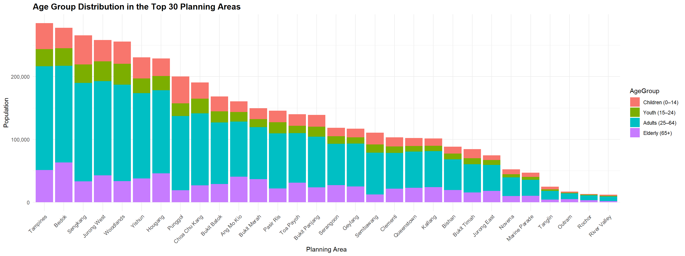
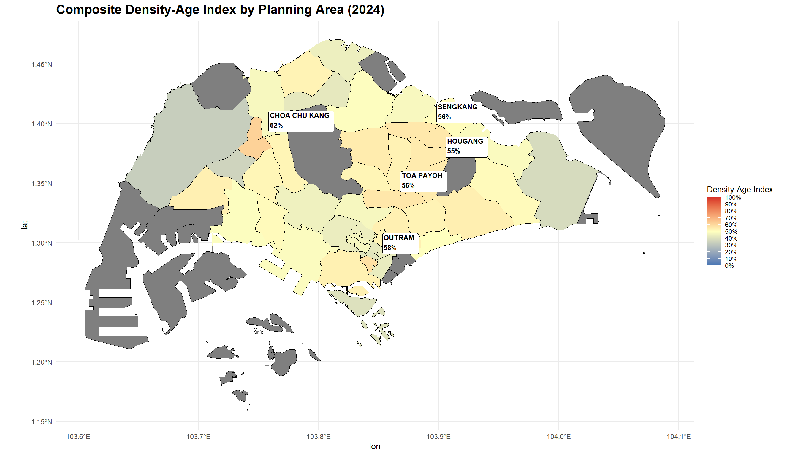
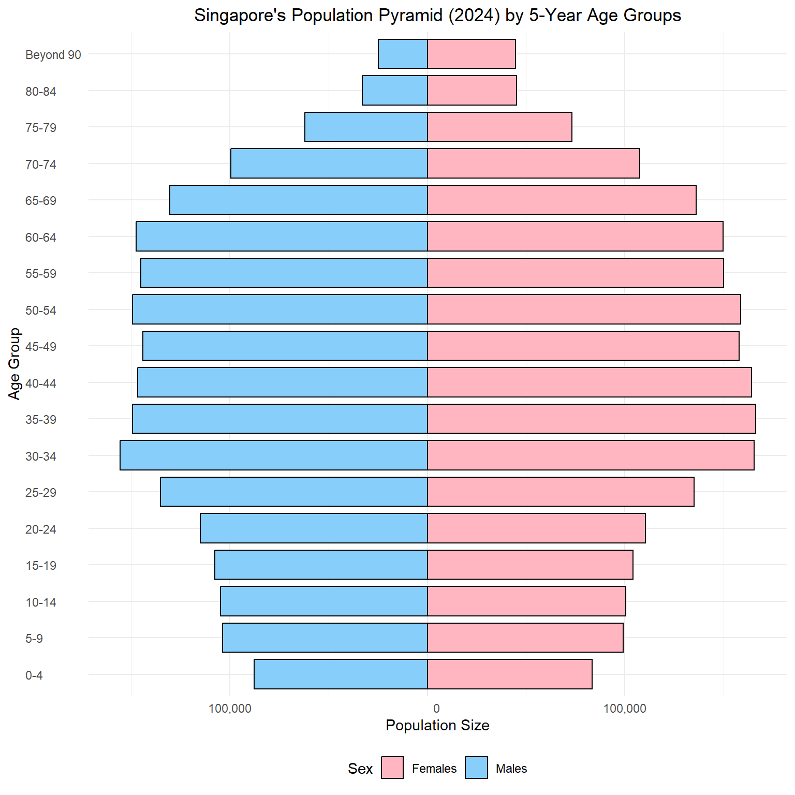

pacman::p_load(tidyverse, ggthemes, gghighlight, ggrepel, patchwork, sf, tmap, knitr, scales)Singapore’s Demographic Landscape in 2024: Insights and Implications
1.0 Introduction: A Nation in Transition
Singapore, a dynamic city-state, is characterized by its rapid urban development, aging population, and diverse social fabric. This report delves into the intricacies of Singapore’s demographic landscape in 2024, providing a visual exploration of its population structure and distribution. By examining key demographic indicators, we aim to uncover the underlying trends and discuss their potential implications for the nation’s future.
2.0 Data and Methodology
2.1 Data Source and Description
The data used in this analysis is sourced from the Department of Statistics, Singapore (DOS). The dataset, “Singapore Residents by Planning Area / Subzone, Single Year of Age and Sex, June 2024,” provides a comprehensive snapshot of Singapore’s resident population as of June 2024. The data is broken down by:
- Planning Area (PA): Defined by the Urban Redevelopment Authority (URA) Master Plan 2019.
- Subzone (SZ): A subdivision within a planning area.
- Age: Single year of age, ranging from 0 to 100+.
- Sex: Males or Females.
- Population: Resident count, rounded to the nearest 10.
- Time: Reference period
2.2 Data Processing
The analysis was conducted using the R programming language. The following packages from the tidyverse collection were employed:
The dataset was loaded using read_csv(). Initial data inspection revealed that the Age column contained a non-numeric value (“90_and_Over”), which was corrected. Several new variables were derived to facilitate the analysis:
df <- read_csv("data/respopagesex2024.csv",
col_types = cols(Age = col_character())) %>%
rename(Planning_Area = PA,
Subzone = SZ,
Population = Pop) %>%
mutate(
Age_Num = if_else(Age == "90_and_Over", 90L, as.integer(Age)),
AgeGroup = case_when(
Age_Num <= 14 ~ "Children (0–14)",
Age_Num <= 24 ~ "Youth (15–24)",
Age_Num <= 64 ~ "Adults (25–64)",
TRUE ~ "Elderly (65+)"
),
AgeGroup = factor(
AgeGroup,
levels = c(
"Children (0–14)",
"Youth (15–24)",
"Adults (25–64)",
"Elderly (65+)"
)
)
)A preview of the cleaned data is shown below:
# A tibble: 6 × 8
Planning_Area Subzone Age Sex Population Time Age_Num AgeGroup
<chr> <chr> <chr> <chr> <dbl> <dbl> <int> <fct>
1 Ang Mo Kio Ang Mo Kio Town C… 0 Males 10 2024 0 Childre…
2 Ang Mo Kio Ang Mo Kio Town C… 0 Fema… 10 2024 0 Childre…
3 Ang Mo Kio Ang Mo Kio Town C… 1 Males 10 2024 1 Childre…
4 Ang Mo Kio Ang Mo Kio Town C… 1 Fema… 10 2024 1 Childre…
5 Ang Mo Kio Ang Mo Kio Town C… 2 Males 10 2024 2 Childre…
6 Ang Mo Kio Ang Mo Kio Town C… 2 Fema… 10 2024 2 Childre…Rows: 60,424
Columns: 8
$ Planning_Area <chr> "Ang Mo Kio", "Ang Mo Kio", "Ang Mo Kio", "Ang Mo Kio", …
$ Subzone <chr> "Ang Mo Kio Town Centre", "Ang Mo Kio Town Centre", "Ang…
$ Age <chr> "0", "0", "1", "1", "2", "2", "3", "3", "4", "4", "5", "…
$ Sex <chr> "Males", "Females", "Males", "Females", "Males", "Female…
$ Population <dbl> 10, 10, 10, 10, 10, 10, 10, 10, 30, 10, 20, 10, 20, 30, …
$ Time <dbl> 2024, 2024, 2024, 2024, 2024, 2024, 2024, 2024, 2024, 20…
$ Age_Num <int> 0, 0, 1, 1, 2, 2, 3, 3, 4, 4, 5, 5, 6, 6, 7, 7, 8, 8, 9,…
$ AgeGroup <fct> Children (0–14), Children (0–14), Children (0–14), Child…3.0 Singapore’s Population Distribution: A Visual Exploration
This section presents a series of visualizations to explore the demographic trends and patterns in Singapore.
3.1 Population Distribution by Planning Area
We begin by examining the overall population distribution across Singapore’s planning areas.
population_summary <- df %>%
group_by(Planning_Area) %>%
summarise(Population = sum(Population), .groups = "drop") %>%
mutate(Percent = round(Population / sum(Population) * 100, 2)) %>%
arrange(desc(Population)) %>%
mutate(CumulativePercent = round(cumsum(Percent), 2),
`S/N` = row_number()) %>%
select(`S/N`,
Planning_Area,
Population,
Percent,
CumulativePercent)
kable(population_summary,
caption = "Population and Cumulative Percentage by Planning Area")| S/N | Planning_Area | Population | Percent | CumulativePercent |
|---|---|---|---|---|
| 1 | Tampines | 284950 | 6.79 | 6.79 |
| 2 | Bedok | 277660 | 6.62 | 13.41 |
| 3 | Sengkang | 265550 | 6.33 | 19.74 |
| 4 | Jurong West | 257910 | 6.15 | 25.89 |
| 5 | Woodlands | 255510 | 6.09 | 31.98 |
| 6 | Yishun | 230320 | 5.49 | 37.47 |
| 7 | Hougang | 228780 | 5.46 | 42.93 |
| 8 | Punggol | 199880 | 4.77 | 47.70 |
| 9 | Choa Chu Kang | 190640 | 4.55 | 52.25 |
| 10 | Bukit Batok | 168390 | 4.02 | 56.27 |
| 11 | Ang Mo Kio | 160450 | 3.83 | 60.10 |
| 12 | Bukit Merah | 149390 | 3.56 | 63.66 |
| 13 | Pasir Ris | 145480 | 3.47 | 67.13 |
| 14 | Toa Payoh | 140030 | 3.34 | 70.47 |
| 15 | Bukit Panjang | 138730 | 3.31 | 73.78 |
| 16 | Serangoon | 118250 | 2.82 | 76.60 |
| 17 | Geylang | 116820 | 2.79 | 79.39 |
| 18 | Sembawang | 110670 | 2.64 | 82.03 |
| 19 | Clementi | 102960 | 2.46 | 84.49 |
| 20 | Queenstown | 102040 | 2.43 | 86.92 |
| 21 | Kallang | 101190 | 2.41 | 89.33 |
| 22 | Bishan | 88210 | 2.10 | 91.43 |
| 23 | Bukit Timah | 84250 | 2.01 | 93.44 |
| 24 | Jurong East | 74590 | 1.78 | 95.22 |
| 25 | Novena | 52150 | 1.24 | 96.46 |
| 26 | Marine Parade | 46950 | 1.12 | 97.58 |
| 27 | Tanglin | 24540 | 0.59 | 98.17 |
| 28 | Outram | 16740 | 0.40 | 98.57 |
| 29 | Rochor | 13040 | 0.31 | 98.88 |
| 30 | River Valley | 11970 | 0.29 | 99.17 |
| 31 | Newton | 9910 | 0.24 | 99.41 |
| 32 | Tengah | 7940 | 0.19 | 99.60 |
| 33 | Singapore River | 4200 | 0.10 | 99.70 |
| 34 | Downtown Core | 4170 | 0.10 | 99.80 |
| 35 | Southern Islands | 2580 | 0.06 | 99.86 |
| 36 | Mandai | 2130 | 0.05 | 99.91 |
| 37 | Changi | 1830 | 0.04 | 99.95 |
| 38 | Orchard | 870 | 0.02 | 99.97 |
| 39 | Sungei Kadut | 600 | 0.01 | 99.98 |
| 40 | Western Water Catchment | 590 | 0.01 | 99.99 |
| 41 | Museum | 530 | 0.01 | 100.00 |
| 42 | Seletar | 140 | 0.00 | 100.00 |
| 43 | Boon Lay | 0 | 0.00 | 100.00 |
| 44 | Central Water Catchment | 0 | 0.00 | 100.00 |
| 45 | Changi Bay | 0 | 0.00 | 100.00 |
| 46 | Lim Chu Kang | 0 | 0.00 | 100.00 |
| 47 | Marina East | 0 | 0.00 | 100.00 |
| 48 | Marina South | 0 | 0.00 | 100.00 |
| 49 | North-Eastern Islands | 0 | 0.00 | 100.00 |
| 50 | Paya Lebar | 0 | 0.00 | 100.00 |
| 51 | Pioneer | 0 | 0.00 | 100.00 |
| 52 | Simpang | 0 | 0.00 | 100.00 |
| 53 | Straits View | 0 | 0.00 | 100.00 |
| 54 | Tuas | 0 | 0.00 | 100.00 |
| 55 | Western Islands | 0 | 0.00 | 100.00 |
The table above provides an overview of the population distribution by planning area, highlighting the percentage of the total population residing in each area.
3.2 Age Group Distribution in Populous Planning Areas
Next, we focus on the age group distribution within the most populous planning areas.
top_n <- 30
top_areas <- df %>%
group_by(Planning_Area) %>%
summarise(Total = sum(Population), .groups = "drop") %>%
slice_max(Total, n = top_n) %>%
pull(Planning_Area)
df %>%
filter(Planning_Area %in% top_areas) %>%
group_by(Planning_Area, AgeGroup) %>%
summarise(Population = sum(Population), .groups = "drop") %>%
ggplot(aes(
x = reorder(Planning_Area, -Population),
y = Population,
fill = AgeGroup
)) +
geom_col() +
scale_y_continuous(labels = scales::label_comma()) +
labs(
title = paste("Age Group Distribution in the Top", top_n, "Planning Areas"),
x = "Planning Area",
y = "Population"
) +
theme_minimal() +
theme(
axis.text.x = element_text(
angle = 45,
hjust = 1,
size = 9
),
plot.title = element_text(size = 14, face = "bold")
)
This chart illustrates the age group distribution across the top 30 most populous planning areas in Singapore. It reveals significant variations in demographic composition across these areas. For instance, areas with a high proportion of elderly residents may require more healthcare facilities and elder-care services, while areas with a high proportion of youth may benefit from investments in education and recreational facilities.
3.3 Planning Area Density and Age Profile
This section examines the relationship between population density and average age across Singapore’s planning areas. A composite “Density-Age Index” is created to highlight areas with a combination of high density and older populations.
planning_sf <- st_read("data/MP14/MP14_PLNG_AREA_WEB_PL.shp")Reading layer `MP14_PLNG_AREA_WEB_PL' from data source
`C:\Users\jia_y\OneDrive - Singapore Management University\Semester 6\ISSS608 VAA\jylau91\ISSS608-VAA\T1\data\MP14\MP14_PLNG_AREA_WEB_PL.shp'
using driver `ESRI Shapefile'
Simple feature collection with 55 features and 12 fields
Geometry type: MULTIPOLYGON
Dimension: XY
Bounding box: xmin: 2667.538 ymin: 15748.72 xmax: 56396.44 ymax: 50256.33
Projected CRS: SVY21planning_sf <- planning_sf %>%
mutate(Area_km2 = as.numeric(st_area(geometry)) / 1e6) # from m² to km²
pop_summary <- df %>%
group_by(Planning_Area) %>%
summarise(Population = sum(Population), .groups = "drop")
planning_map <- planning_sf %>%
mutate(PLN_AREA_N = toupper(PLN_AREA_N)) %>%
left_join(pop_summary %>% mutate(Planning_Area = toupper(Planning_Area)),
by = c("PLN_AREA_N" = "Planning_Area"))
pop_by_area_age <- df %>%
group_by(Planning_Area, AgeGroup) %>%
summarise(Population = sum(Population), .groups = "drop") %>%
mutate(Planning_Area = toupper(Planning_Area)) # Match shapefile casing
map_data <- planning_sf %>%
select(PLN_AREA_N, geometry, Area_km2) %>%
right_join(pop_by_area_age, by = c("PLN_AREA_N" = "Planning_Area")) %>%
mutate(PopDensity = Population / Area_km2)
max_density_area <- map_data %>%
filter(PopDensity == max(PopDensity, na.rm = TRUE)) %>%
select(PLN_AREA_N, PopDensity) %>%
distinct()
map_data <- map_data %>%
mutate(PopDensity_Capped = pmin(PopDensity, 20000))
avg_age <- df %>%
group_by(Planning_Area) %>%
summarise(Avg_Age = weighted.mean(Age_Num, w = Population), .groups = "drop") %>%
mutate(Planning_Area = toupper(Planning_Area))
map_data <- map_data %>%
left_join(avg_age, by = c("PLN_AREA_N" = "Planning_Area")) %>%
mutate(
# Scale both to 0–1
PopDensity_Scaled = PopDensity_Capped / max(PopDensity_Capped, na.rm = TRUE),
Avg_Age_Scaled = Avg_Age / max(Avg_Age, na.rm = TRUE),
# Composite score: equal weight to both
DensityAgeIndex = (PopDensity_Scaled + Avg_Age_Scaled) / 2
)
map_index <- map_data %>%
group_by(PLN_AREA_N) %>%
summarise(DensityAgeIndex = mean(DensityAgeIndex, na.rm = TRUE),
geometry = st_union(geometry))
top5_labels <- map_index %>%
slice_max(DensityAgeIndex, n = 5) %>%
mutate(centroid = st_centroid(geometry)) %>%
mutate(lon = st_coordinates(centroid)[, 1],
lat = st_coordinates(centroid)[, 2])ggplot(map_index) +
geom_sf(aes(fill = DensityAgeIndex), color = "black", size = 0.2) +
geom_label_repel(
data = top5_labels,
aes(
x = lon,
y = lat,
label = paste0(PLN_AREA_N, "\n", scales::percent(DensityAgeIndex, accuracy = 1))
),
size = 3,
fontface = "bold",
nudge_x = 2000,
# nudging right
nudge_y = 2000,
# nudging up
hjust = 0,
# align left
vjust = 1,
# align top
box.padding = 0.6,
point.padding = 0.5,
segment.color = "black",
segment.size = 0.3,
min.segment.length = 0
) +
scale_fill_gradientn(
colours = c("#4575b4", "#ffffbf", "#d73027"),
limits = c(0, 1),
breaks = seq(0, 1, by = 0.1),
labels = scales::label_percent(accuracy = 1)
) +
labs(
title = "Composite Density-Age Index by Planning Area (2024)",
fill = "Density-Age Index"
) +
theme_minimal() +
theme(
plot.title = element_text(size = 16, face = "bold"),
legend.title = element_text(size = 10),
legend.text = element_text(size = 8)
)
The map displays a “Density-Age Index,” a composite measure combining population density and average age for each planning area. Areas with high index values indicate a combination of high population density and older average age.
- The top 5 areas with the highest Density-Age Index are labeled on the map. These areas may face unique challenges related to infrastructure, housing, and social services.
- Areas in darker shades have a higher index, suggesting a greater concentration of older residents and denser populations. This could imply a higher demand for eldercare facilities, accessible transportation, and age-friendly housing.
- Areas in lighter shades have a lower index, indicating younger populations and/or less dense living conditions. These areas might benefit from investments in schools, childcare facilities, and family-oriented amenities.
- Some planning areas are colored in grey, indicating missing data. Further investigation is needed to understand why data is unavailable for these areas and how this might affect the overall analysis.
The Density-Age Index highlights planning areas with a combination of high population density and older populations. This composite measure can help policymakers identify areas that may require targeted interventions, such as:
- Development of elder-care facilities and services
- Improvements to transportation accessibility
- Adaptation of housing and infrastructure to meet the needs of an aging population
3.4 Singapore’s Population Structure: A Detailed Look
Finally, we examine Singapore’s overall population structure using a population pyramid.
# Find the maximum age
max_age <- max(df$Age_Num)
# Prepare the data for ggplot2
plot_df <- df %>%
# Group ages by 5-year intervals
mutate(AgeGroup = cut(Age_Num,
breaks = if (max_age > 90) {
c(seq(0, 85, by = 5), 90, max_age + 1)
} else {
c(seq(0, 85, by = 5), max_age + 1)
},
right = FALSE,
labels = if (max_age > 90) {
c(
paste0(seq(0, 80, by = 5), "-", seq(4, 84, by = 5)),
"Beyond 90"
)
} else {
c(
paste0(seq(0, 80, by = 5), "-", seq(4, 84, by = 5)),
"Beyond 90"
)
})) %>%
group_by(AgeGroup, Sex) %>%
summarise(Population = sum(Population)) %>%
ungroup() %>%
mutate(Population = ifelse(Sex == "Males", -Population, Population)) %>%
mutate(PopulationAbs = abs(Population)) # Create absolute value for labels
# Create the population pyramid using ggplot2
ggplot(plot_df, aes(x = AgeGroup, y = Population, fill = Sex)) +
geom_bar(stat = "identity", width = 0.8, color = "black") +
coord_flip() +
labs(
title = "Singapore's Population Pyramid (2024) by 5-Year Age Groups",
x = "Age Group",
y = "Population Size"
) +
scale_y_continuous(labels = function(x)
format(abs(x), big.mark = ",", scientific = FALSE)) +
scale_fill_manual(values = c("Females" = "#FFB6C1", "Males" = "#87CEFA")) +
theme_minimal() +
theme(
plot.title = element_text(hjust = 0.5),
legend.position = "bottom",
axis.text.y = element_text(hjust = 0)
)
The population pyramid reveals the following demographic characteristics of Singapore:
- The pyramid has a broad base, indicating a large proportion of the population in the younger age groups. This suggests a potentially high birth rate and a growing population.
- The pyramid gradually narrows towards the top, indicating a decrease in population size with increasing age. This is typical of most populations, as mortality rates tend to increase with age.
- There are some irregularities in the shape of the pyramid, such as bulges or constrictions at certain age groups. These irregularities may be due to historical events, such as changes in birth rates or migration patterns.
- The male and female populations are roughly balanced across most age groups, although there may be slight differences at the oldest ages.
4.0 Conclusion: Key Demographic Trends and Future Outlook
Singapore’s demographic landscape in 2024 is characterized by a combination of factors, including a large working-age population, increasing longevity, and variations in age distribution across planning areas. These trends have significant implications for Singapore’s future.
- The large working-age population presents an opportunity for continued economic growth and productivity. However, it also necessitates policies to ensure workforce adaptability and skills development in a rapidly changing global economy.
- The increasing proportion of elderly residents poses challenges and opportunities. Singapore will need to invest in healthcare infrastructure, eldercare services, and age-friendly housing to support its aging population. At the same time, the experience and wisdom of older adults can be a valuable asset to society.
- Variations in age distribution across planning areas highlight the need for targeted urban planning and social policies. Areas with a high proportion of elderly residents may require different amenities and services than areas with a high proportion of young families.
By understanding these demographic trends, Singapore can proactively address the challenges and capitalize on the opportunities presented by its evolving population landscape. Continued monitoring of demographic changes and adaptation of policies will be crucial to ensuring a sustainable and inclusive future for all Singaporeans.